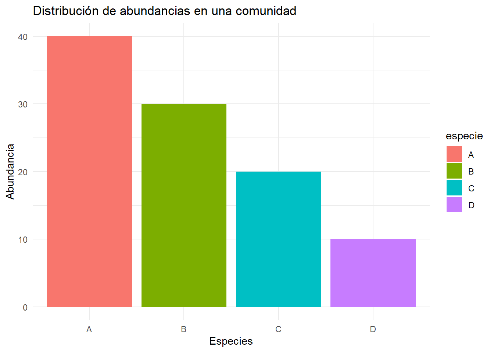
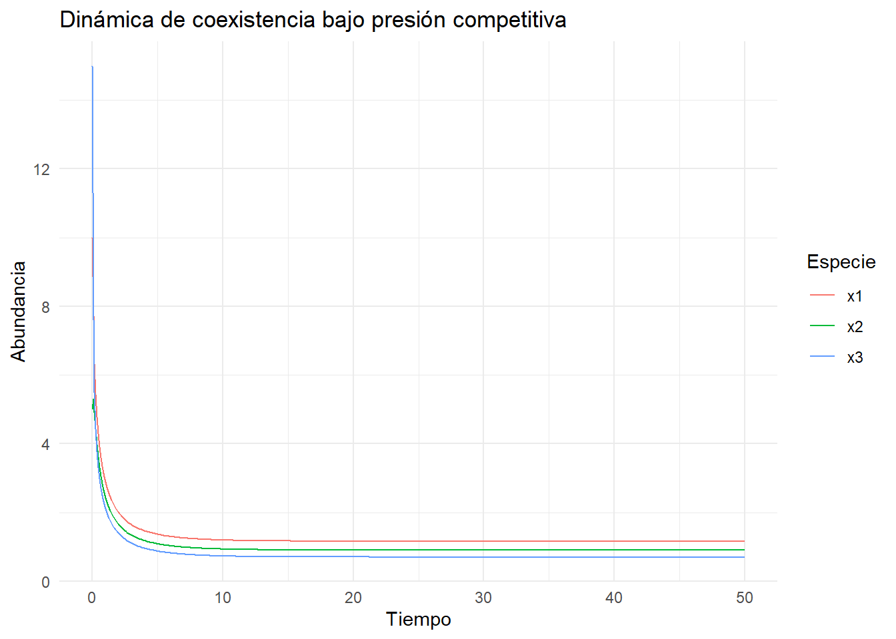
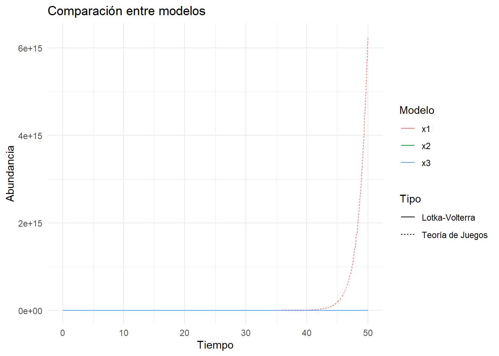

7 Capítulo 7: Diversidad en Comunidades Ecológicas
7.1 ¿Qué es la diversidad? Desde la teoría clásica a la estratégica
La diversidad ecológica puede ser descrita a través de métricas que capturan diferentes aspectos:
La riqueza de especies representa el número de especies presentes en un ecosistema, mientras que la Equitabilidad indica cómo se distribuyen las abundancias entre las especies.
7.2 Índices de diversidad
7.2.1 Índice de Shannon
El índice de Shannon captura tanto la riqueza como la equidad de una comunidad: $$ H’ = - _{i=1}^S p_i (p_i)
$$ donde \(p_i\) es la proporción de la abundancia de la especie \(i\) respecto al total.
7.2.2 Índice de equitabilidad de Pielou
Este índice mide qué tan equitativa es una comunidad, normalizando el índice de Shannon por la riqueza máxima posible: $$ J’ =
$$ donde \(S\) es la riqueza de especies.
7.2.3 Cálculo en R
Ejemplo con una comunidad ficticia:
library(vegan) # Para cálculos de diversidad
# Datos de ejemplo
comunidad <- c(A = 40, B = 30, C = 20, D = 10) # Abundancias por especie
# Índice de Shannon
shannon <- vegan::diversity(comunidad, index = "shannon")
# Índice de Pielou
pielou <- shannon / log(length(comunidad))
# Resultados
cat("Índice de Shannon:", shannon, "\n")## Índice de Shannon: 1.279854## Índice de Pielou: 0.9232197Visualización de la comunidad:
comunidad_df <- tibble(
especie = names(comunidad),
abundancia = comunidad
)
ggplot(comunidad_df, aes(x = especie, y = abundancia, fill = especie)) +
geom_bar(stat = "identity") +
labs(title = "Distribución de abundancias en una comunidad",
x = "Especies", y = "Abundancia") +
theme_minimal()
7.3 Juegos evolutivos y diversidad: coexistencia y partición de nichos
La coexistencia de especies está influenciada por cómo comparten los recursos y particionan nichos. Usando el modelo de Lotka-Volterra Generalizado, podemos modelar interacciones competitivas y cómo estas afectan la diversidad.
Las ecuaciones básicas son:
\[ \frac{dx_i}{dt} = x_i \left( r_i + \sum_{j=1}^n A_{ij} x_j \right) \]
donde: - \(x_i\): abundancia de la especie \(i\). - \(r_i\): tasa intrínseca de crecimiento. - \(A_{ij}\): matriz de interacciones entre especies.
7.4 Ejemplo en R: Modelos de coexistencia bajo presión competitiva
En este ejemplo, simulamos una comunidad con 3 especies que compiten por recursos:
# Parámetros
r <- c(0.5, 0.3, 0.2) # Tasa de crecimiento
A <- matrix(c(-1, 0.5, 0.3,
0.4, -1, 0.2,
0.2, 0.3, -1), nrow = 3, byrow = TRUE) # Matriz de interacción
# Modelo de Lotka-Volterra
glv_model <- function(t, state, parameters) {
with(as.list(c(state, parameters)), {
dx1 <- x1 * (r[1] + A[1,1] * x1 + A[1,2] * x2 + A[1,3] * x3)
dx2 <- x2 * (r[2] + A[2,1] * x1 + A[2,2] * x2 + A[2,3] * x3)
dx3 <- x3 * (r[3] + A[3,1] * x1 + A[3,2] * x2 + A[3,3] * x3)
list(c(dx1, dx2, dx3))
})
}
# Condiciones iniciales
state <- c(x1 = 10, x2 = 5, x3 = 15)
time <- seq(0, 50, by = 0.1)
# Solución
out <- ode(y = state, times = time, func = glv_model, parms = list(r = r, A = A))
out <- as.data.frame(out)
# Visualización
out_long <- out %>% pivot_longer(cols = -time, names_to = "Especie", values_to = "Abundancia")
ggplot(out_long, aes(x = time, y = Abundancia, color = Especie)) +
geom_line() +
labs(title = "Dinámica de coexistencia bajo presión competitiva", x = "Tiempo", y = "Abundancia") +
theme_minimal()
7.5 Comparación entre modelos tradicionales y basados en Teoría de Juegos
ESTO NO ESTA BIEN JUACO,REVISAR
# Parámetros comunes
r <- c(0.5, 0.3, 0.2) # Tasa intrínseca de crecimiento
A <- matrix(c(-1, 0.5, 0.3,
0.4, -1, 0.2,
0.2, 0.3, -1), nrow = 3, byrow = TRUE) # Matriz de interacción
# Modelo basado en Lotka-Volterra
glv_model <- function(t, state, parameters) {
with(as.list(c(state, parameters)), {
dx1 <- x1 * (r[1] + A[1,1] * x1 + A[1,2] * x2 + A[1,3] * x3)
dx2 <- x2 * (r[2] + A[2,1] * x1 + A[2,2] * x2 + A[2,3] * x3)
dx3 <- x3 * (r[3] + A[3,1] * x1 + A[3,2] * x2 + A[3,3] * x3)
list(c(dx1, dx2, dx3))
})
}
# Modelo basado en teoría de juegos
game_theory_model <- function(t, state, parameters) {
with(as.list(c(state, parameters)), {
dx1 <- x1 * (r[1] - sum(A[1,] * x1 / (x1 + x2 + x3)))
dx2 <- x2 * (r[2] - sum(A[2,] * x2 / (x1 + x2 + x3)))
dx3 <- x3 * (r[3] - sum(A[3,] * x3 / (x1 + x2 + x3)))
list(c(dx1, dx2, dx3))
})
}
# Condiciones iniciales
state <- c(x1 = 10, x2 = 5, x3 = 15)
time <- seq(0, 50, by = 0.1)
# Solución de Lotka-Volterra
out_lv <- ode(y = state, times = time, func = glv_model, parms = list(r = r, A = A))
out_lv <- as.data.frame(out_lv)
# Solución del modelo basado en juegos
out_gt <- ode(y = state, times = time, func = game_theory_model, parms = list(r = r, A = A))
out_gt <- as.data.frame(out_gt)
# Visualización de resultados
out_lv_long <- out_lv %>% pivot_longer(cols = -time, names_to = "Modelo", values_to = "Abundancia")
out_lv_long$Tipo <- "Lotka-Volterra"
out_gt_long <- out_gt %>% pivot_longer(cols = -time, names_to = "Modelo", values_to = "Abundancia")
out_gt_long$Tipo <- "Teoría de Juegos"
out_combined <- bind_rows(out_lv_long, out_gt_long)
ggplot(out_combined, aes(x = time, y = Abundancia, color = Modelo, linetype = Tipo)) +
geom_line() +
labs(title = "Comparación entre modelos", x = "Tiempo", y = "Abundancia") +
theme_minimal()
7.6 Ejemplo real: Diversidad de aves en paisajes fragmentados
Para este ejemplo, usamos datos simulados representando fragmentación de hábitats:
# Simulación de fragmentación
set.seed(123)
habitats <- tibble(
fragmento = 1:10,
tamaño = runif(10, 1, 10),
aislamiento = runif(10, 0.1, 1),
riqueza = tamaño - 0.5 * aislamiento + rnorm(10, 0, 0.5)
)
# Visualización
habitats %>%
ggplot(aes(x = tamaño, y = riqueza, size = aislamiento, color = aislamiento)) +
geom_point(alpha = 0.7) +
labs(title = "Relación entre fragmentación y riqueza de aves",
x = "Tamaño del fragmento", y = "Riqueza de especies") +
theme_minimal()